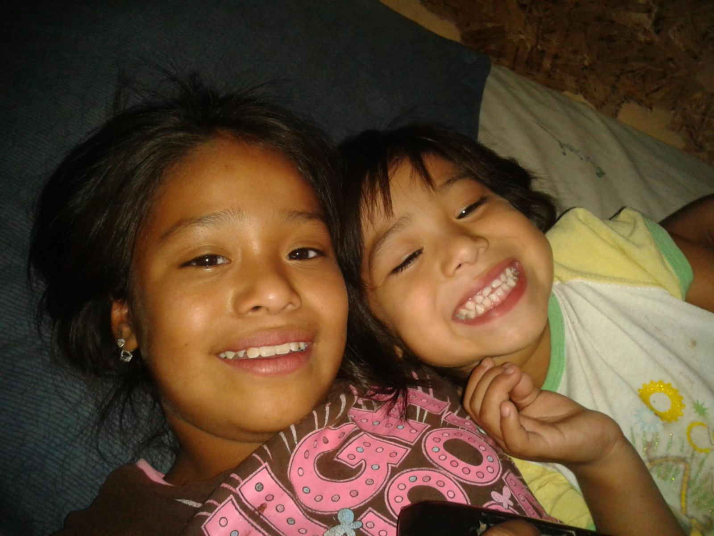
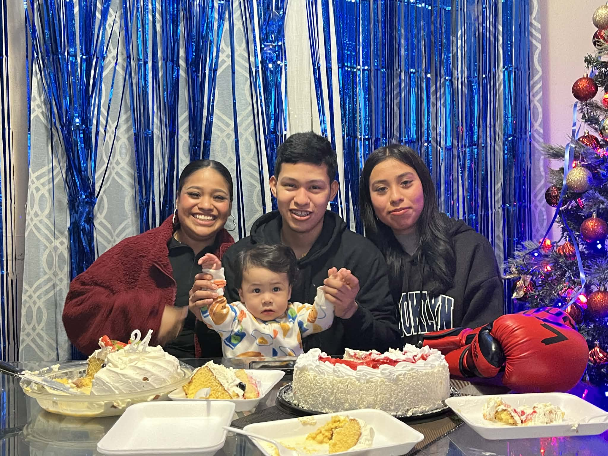

mi hermana mayor, a pesar de todo lo que ha pasado es alguien muy fuerte y a alguien a quien admirar, sara es alguien importante en mi vida, sara es como mi segunda madre, siempre asistió amis eventos de la escuela y secundaria, fue quien más cuido de mi, espero poder regresarle un poquito de todo lo que hizo por mi se que en algun momemento estaremos juntas de nuevo. :)

René para mi es alguien muy especial, lo quiero demasiado a pesar de como era conmigo, lo aprecio demsiado, es alguien dificil de querer pasar tiempo con el es increible, nos burlamos de todo y de todos, con René tuve que enseñarme a pelear ya que el siempre era de luchitas, me gustaba jugar con el, tenía que acoplarme a sus juegos, como Sara no quería jugar conmigo a las muñecas tenía que jugar con el, a los carritos, yo creo que gracias a el tengo mis gusto por ellos. ante todo esto se que René siempre trata de ser mejor hermano, lo quiero mucho.
